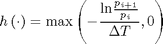
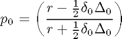
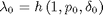
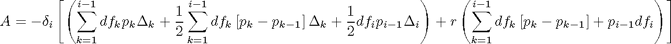
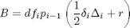
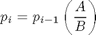

Contents
Credit Default Swap Piece-Wise Hazard Rate Bootstrapping
function [sp,hz]=CDSBootstrap(rr,df,spread)
Input Parameters
| rr | Recovery Rate |
| df | Discount Factors |
| spread | Market credit default swap spreads |
Output Parameters
| sp | Survival Probabilities |
| hz | Hazard Rates |
Hazard Rate Function

function hz = HazardRate(sp1,sp2,dt) hz = max(-log(sp2/sp1)/dt,0); end delta = spread(:,1) - [0;spread(1:end-1,1)]; spread = spread(:,2); df = df(:,2); rr = 1 - rr; sp = ones(length(spread),1); hz = zeros(length(spread),1);

f = 0.5 * spread(1) * delta(1);
sp(1) = (rr - f) / (rr + f);

hz(1) = HazardRate(1,sp(1),delta(1));
for i=2:length(spread)
k = i-1;
sp1 = [1;sp(1:k-1)];
s1 = sum(df(1:k).*sp(1:k).*delta(1:k));
s2 = sum(df(1:k).*(sp1-sp(1:k)).*(delta(1:k)));
s3 = sum(df(1:k).*(sp1-sp(1:k)));

A = -spread(i)*(s1 + 0.5*s2 + 0.5*df(i)*sp(i-1)*delta(i)) ...
+ rr * (s3 + sp(i-1) * df(i));

B = df(i) * sp(i-1) * (0.5 * spread(i) * delta(i) + rr);

sp(i) = sp(i-1) * (A / B);
if sp(i) > sp(i-1)
sp(i) = sp(i-1);
hz(i) = 0;
else
hz(i) = HazardRate(sp(i-1),sp(i),delta(i));
end
end
end